Raíz cuadrada
 De: La Frikipedia, la enciclopedia extremadamente seria.
De: La Frikipedia, la enciclopedia extremadamente seria.
«Te bajo medio punto por no tener suficientemente regada la planta»
~ Profesor de matemáticas hablando a su alumno sobre un examen de raíces cuadradas
«Con los dedos de las manos y los dedos de los pies, los cojones y la polla todos suman veintitrés»
~ Yo Sobre la resolución de la raíz cuadrada
No tiene nada que ver con esto
Operación matemática que consiste en irse al campo, excavar con una pala alrededor de una planta y rebajar los extremos hasta que queden cuadrados a la fuerza. Es un método inventado por algún tío de esos que llaman Matemáticos para tener que meter algo en los exámenes que sirva para hacer bulto y no se pueda aplicar a la vida real (¿o es que de verdad has rebajado una raíz de un árbol para que fuera cuadrada?).
Resolución
Para resolver las raíces cuadradas necesitarás...
- Guantes
- Funda
- Pala
- Planta
- Tijeras de podar
- El último número del playtío
- Bisturí
- Un buen trozo de popo
- un brazo de peter pan
- un sujeta papeles
- Una cawama (cervesa)
- Calzoncillos limpios
- Limpiarte treinta veces el culo antes de hacer el experimento.
- Y lo más importante no estar borracho: podría ser fatal que en vez de una raíz cuadrada le haces una raíz ovalada ¡suspenso seguro!.
Y ahora los pasos para hacer la raíz (ojo, hay que seguirlos a rajatabla, si te saltas alguno, te mueres sale mal):
- Cogemos una fragoneta y nos vamos al campo (ojo, tienes que ir en una fragoneta al campo, da igual que vivas en él, te vas a la ciudad y te vuelves al campo en la fragoneta)
- Ponemos protecciones (una funda, malpensados!) y sacamos el instrumento (la pala).
- Buscamos una planta y la sacamos de raíz (si sale de raíz ya cuadrada, tírala, no vale, no se pueden saltar ninguno de los pasos).
- Cogemos las tijeras como si fuera un cuchillo (pero traer cuchillo no vale ¿eh?) y empezamos a rebajar en la raíz hasta que quede cuadrada.
- Tiramos el bisturí a la basura porque nos hemos dado cuenta de que el autor de este artículo estaba fumao, metemos la raíz en la fragoneta y usamos la revista playtío para ejem... ya sabéis... (por eso es completamente recomendable usar calzoncillos limpios).
- Llegamos a la casa de el/la profesor/a y nos lo/a tiramos para que nos dé un diez en el examen de raíces (paso MUY importante, totalmente irrecomendable saltárselo)
Partes de la raíz
Antes de hacer una raíz cuadrada debemos tener en cuenta antes en que partes se divide para no romperla cuando intentamos "cuadrangualarla":
- Producto: es un palito largo, y si se cortara esto, mandarías a la mierda la raíz y sería muy difícil que la planta siguiera viva después de cortarla. Tienes que tener mucho cuidado, y tratarlo como si fuera tu palito.
- Diferencia: está debajo del producto (o palo largo) y también tienes que tener mucho cuidado con esto, porque a ti no te gustaría tampoco que te cortaran lo de debajo del palito largo.
- Dividendo: como su nombre indica, es una parte que tienes que dividir y partirla a la mitad para que salga bien la raíz cuadrada. Si no, te sale una raíz ovalada y la cagamos.
- Cociente: como su nombre indica, lo puedes cocer para hacer sopa de verduras después de cortarlo.
- Resto: pos eso, el montón que queda, pa la basura.
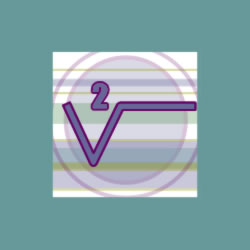 Representación gráfica de la raíz en papel para no tener que meter plantas en clase. Pobre iluso al que se le ocurrió desperdiciar una v para ponerle un rabo largo...
Propiedades
- Tienen forma de raíz (lógico) cuadrada (lógico también).
- Flotan en el hagua.
- Son comibles si tienes muuuuuuuuuuuuuuuuuuucha hambre.
- Si les prendes fuego se queman.
- Si al rebajarlas con las tijeras de podar te quedan demasiado cuadradas, puedes pincharte, desangrarte, y morir por pérdida de sangre.
- Si haces una raíz cúbica demasiado cúbica puedes verte atrapado por el agujero tridimensional del frinkaedro y encontrarte con Homer en 3D.
- No sirve para matar, se rompería si se la lanzaras a alguien a la cabeza.
- Si tienes una raíz cuadrada en la mano y dices delante de un espejo 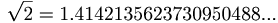 te crece un cocotero de la raíz, con cocos explosivos que si te cae uno en la cabeza te mueres.
- NO son fumables, la tierra pegada a la raíz te deja la boca negra y llena de mierda.
- Son conductoras (ojo, sin carnet) de la electricidad.
- Si las machacas y las metes en hagua puedes crear un efectivo sustituto del pis.
- Si las machacas y te cagas en ellas puedes crear un efectivo sustituto de la mierda con raíces.
Igualación de las raíces cuadradas con números reales
Siguiendo el sistema patentado del Luisma, podemos saber el valor de la raíz cuadrada según lo que miden los lados del cuadrado:
| Raíz
|
Solución
|
| 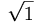
|
|
| 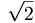
|

|
| 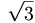
|
cosa
|
| 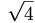
|
pos me trincas el aparato!
|
| 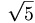
|
por el culo te hinco la raíz!
|
| 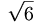
|
No existe
|
| 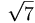
|
Un chorriputal
|
| 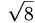
|
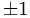
|
| 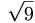
|
f(x)=5@
|
| 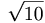
|
Un nº
|
A todo esto ¿para qué coño sirve?
Para nada, a ver que aplicación le vas a encontrar a una raíz cuadrada. Demasiada raíz para ser cuadrada, demasiado cuadrada para ser raíz, no sirve absolutamente para nada. Aún así, algunos matemáticos han investigado sobre esto y llegaron a la conclusión de que:
- La raíz cuadrada es cuadrada, y un cuadrado puede servir para:
- Nada
- Dar que hablar
- Ninguna de las anteriores
- La raíz cuadrada es raíz, con lo que sirve para que las plantas puedan meterse en el subsuelo y vigilarnos por debajo a la vez que por arriba al crecer.
- Las raíces cuadradas... No sirven para nada.
Conclusión final
Las raíces cuadradas traman algo. Se resguardan bajo su apariencia de inútiles y quiebracabezas para poder dominar el mundo desde dentro. Por eso, lo más fácil que puedes hacer querido/a lector/a es ¡¡¡CORRER!!!.
Autor(es):
- Nexo
- Frikiman
- Aque
- Epikurolibre
- El Sevillano
- Veni Vidi Vici
- Orko
- Mel-o
- Tortilla
- Juanjo93
Frikipedia 2005-2016, Licencia
GFDL 1.2 - Extraído por FrikiLeaks